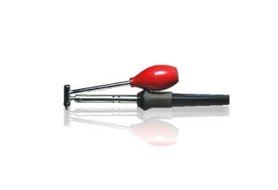

-
I used a Radio Shack desoldering iron without the acetone step.

Easy as pie.Cha iro
enjoy building it yourself.
if it fails, fuck it.
at least you gave it a whirl. -
So my friends board flipped out when on the dyno, MAF, RPM and injection control had glitched, then somehow burned into the board. - found this out after sending it back to Matt. he corrected it, repaired a pin for me, and is on the way back now, for $25. excellent customer service! Says it's working properly now!
I had swapped his board for mine, to realize it was a hardware/major software issue with his. hopefully all is well now!Damn dirty angels....these cars!
Current Daily Driver - 86 Turbo.
Under the cover - THE BANANA… that needs to be re-energized.
sigpic -
Dealing with Nistune again, trying to get my friends car to run right. I started with a base 88 map, corrected for 560cc injectors and Z32 MAF. it will fire up and run ok. but watching AFR's it's rich. start to adjust latency (no idea what it should be since we cant find a spec for RX-7 560's) and K to get it to lean up some. when it's around 14 or so it starts running rougher. if I hold the throttle at a higher RPM it richens up again, I adjust the map, etc to get that section to make the O2 read 13-14 or so (this is all while sitting still), I can actually feel it miss, and stumble at times, as the wideband swings between 13 and 15… Im wondering if either it's just my latency and K being incorrect, or some other setting, or if we actually have bad/clogged injectors. They came from Evolution Injection (my brother got from him too, and are great) flow tested, etc.
any thoughts?Damn dirty angels....these cars!
Current Daily Driver - 86 Turbo.
Under the cover - THE BANANA… that needs to be re-energized.
sigpic -
My approach is simple when setting a base tune:
Load a stock basemap in NIStune.
Adjust for injector size.
Set a flat AFR across the map.
Adjust the K value until you match the AFR (or as close as possible)
I then adjust the map accordingly to match my desired AFR at a given RPM
If they're new or recently flow tested, they should be OK.
Are these the same as the ND 560 Evo 8 injectors? If so latency should be .048545 RWHP & 540 RWTQOriginally posted by Andrew84zx
tell her your car is so fast it will make her panties fly off

-
This is exactly how I got my running tune done.Originally posted by FlawleZ
I was able to drive 1.5 hours to the tuner's shop without issues. -
I'll try this, set the Injector Latency to 480, and adjust maybe 2 or 3 columns to a set AFR and see what I can do with that, adjusting the K to match, at least in stationary trials. Thanks.
Im also talking to Matt about getting the Innovate wideband to consult with Nistune properly…
Originally posted by FlawleZDamn dirty angels....these cars!
Current Daily Driver - 86 Turbo.
Under the cover - THE BANANA… that needs to be re-energized.
sigpic -
also, did either of you notice the AFR's being jumpy or skiddish? Using Innovate LC-1 I believe it is…Damn dirty angels....these cars!
Current Daily Driver - 86 Turbo.
Under the cover - THE BANANA… that needs to be re-energized.
sigpic -
Some fluctuation is normal. A large variance is typically either incorrect latency values or a hardware problem at least in my experience.545 RWHP & 540 RWTQOriginally posted by Andrew84zx
tell her your car is so fast it will make her panties fly off
-
are you going to visit the place in RVA for a tune? lmk how they do.Originally posted by Axel kain View Post -
Been dealing with Matt Shue who tunes at Momentum autosport in the Hanover Air Park… nice knowledgeable guy, I have a feeling it might be my O2 needing to be recalibrated, and since the gauge isnt communicating properly, im going to have to do the old hard wire recalibration method…Damn dirty angels....these cars!
Current Daily Driver - 86 Turbo.
Under the cover - THE BANANA… that needs to be re-energized.
sigpic -
This is who they are using for the tuning. Pretty sure it's his first Z31, but he's done a number of Z32s and other Nissans before. http://www.shuetuning.net/Prius… because Pretentious wouldn't fit across the back of the car…
Cheap, Fast, Reliable - pick any two
My 1986 Turbo Build -
Originally posted by Axel kain View Post
Small world, i did some aviation training at HOVA
I ran into some issues with the RS232 to USB drivers giving NisTune incorrect feedback. Do you have that resolved?
Correct distance from turbine outlet, etc? -
well, it's in a roastin' down pipe, so i'd say its relatively in a stock location. I threw a video of the issues on the FB page… once I figure out the best way, I'll put it on here too. when I held it at a steady throttle, sitting still, at around 3500 the AFR would literally bounce from 13-16. almost blip to 16…16+. makes me wonder about the injectors, being that at higher RPM it does it more/worse.Damn dirty angels....these cars!
Current Daily Driver - 86 Turbo.
Under the cover - THE BANANA… that needs to be re-energized.
sigpic -
OK! so, in talking with Matt, I got the Innovate working in Nistune! I found the TPS is out of spec, so I disconnected it for the time being, as well as swapped in an actual Z32 MAF just to test, noticed voltages consistent with the HPX. ruled that out.
SO, in testing now, I have a DEAD spot at 2500 RPM or so. it dumps full lean at that rpm, above and below it runs awesome!!
Talking to Matt about that, believes it's an image issue, apparently the chip thinks it's a NA (didnt know) 88-89 setup (I knew that) in an 87 NA auto ECU. More to come as it progresses, I think this may have just happened to be a perfectly bad situation for us…Damn dirty angels....these cars!
Current Daily Driver - 86 Turbo.
Under the cover - THE BANANA… that needs to be re-energized.
sigpic -


Copyright © 2006–. All rights reserved. Privacy Policy